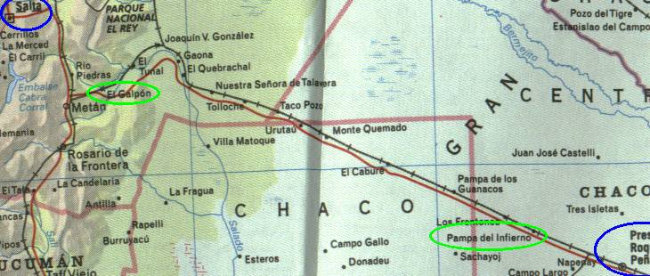

← anterior | principal | próxima →

- Presidencia Roque Sáenz Peña
- Pampa del Infierno
- El Galpón
- Salta
Dicas
- Pior parte da viagem
- Nada pra ver/fazer, apenas retão e chaco
- Buracos em alguns poucos lugares do retão
- Insetos! Insetos! Insetos! No pára-brisa e no radiador
- Animais cruzando ou parados na pista
- Pare em Pampa del Infierno para tirar uma foto junto à placa da estrada, com o nome da cidade, clássico.
- Estrada passa por dentro de algumas cidadezinhas maiores, como Joaquim v. González, que dá pra dormir nela, senão segue direto até Salta.
Segunda tentativa de extorsão do dia
Mais uma vez tentativa de extorsão!!! No mesmo dia, incrível!! Dessa vez foi num posto policial cerca de 1 hora depois de Pampa del Infierno.
Era uma casinha perdida no meio do nada, passamos BEM DEVAGARINHO enquanto o guarda fazia uns sinais incompreensíveis com as mãos. Como ele fez cara feia, paramos um pouco afrente.
Ele nos abordou e começou com o papo padrão: "carteira, documentos do veículo, extintor, estepe, blablabla". Como estávamos preparados para isso e todos os itens estavam em ordem, ele inventou na hora que éramos pra ter parado ANTES do posto policial e por isso iríamos ser multados por excesso de velocidade!!! lazarento!!
Aí foi um estresse geral, entramos no posto deles, fomos falar com o "chefão", e queriam simplesmente 600 dólares por carro! hahahahaha! Quem eles acham que somos? Milionários?
Novamente aquele papo mole de camaradagem e que ele podia liberar-nos na hora se pagássemos 10% do valor da multa, ou seja, 60 dólares por carro.
As mulheres, indignadas, tomaram as rédias da discussão. Elas tinham certeza que os caras só queriam grana mesmo e nunca iam aplicar um multa formal, então bateram o pé e ficou aquele impasse.
Discussão vem, discussão vai, uma das mulheres puxou um gravador, mostrou pro cara e começou a gravar a conversa. Aí os caras meio que ficaram sem saber o que fazer, e após mais choradeira de brasileiros pobres, nos liberaram sem o pagamento da propina. Incrível!
Tudo graças a persistência e luta da mulhererada. Massa mesmo.
Máquina queimadora de óleo
Ah! Um pouco mais pra frente descobrimos que o motor da Toyota não estava 100% e estava queimando 1 litro de óleo a cada 300Km!!!
E assim foi até o final da viagem, parando periodicamente para colocar mais óleo no motor. Na viagem toda foram consumidos mais de 30 litros de óleo!
A novela da carteira do Aurelio
O foda foi que ao decidirmos ir direto até Salta, tivemos que dirigir de noite, e encontramos alguns buracos na estrada. Num desses buracos, caímos, e a marcha do 4x4 da Toyota se soltou, e como na hora não sabíamos exatamente qual era o problema e imaginando já que tinha quebrado alguma coisa embaixo como eixos, cardã ou coisa assim, fui lá embaixo do carro com uma lanterna ver se via alguma coisa fora do lugar.
Nisso minha carteira, com todos os documentos e passe de entrada na argentina, e um pouco de dinheiro caiu do meu bolso sem eu ver. De noite, na beira de uma estrada desconhecida, sem sinal de civilização por perto ou de algum tipo de construção que pudesse servir de referência para lembrarmos desse ponto exato da parada. Perdida mesmo.
Bem, como eu não vi que tinha perdido a carteira, continuei olhando as paradas do carro e só depois deu o clique e voltei a marcha no lugar e tudo voltou a funcionar (óóó).
Então continuamos a viagem (e a carteira ficou lá), mas como esse era o segundo dia, o dia maldito em que tudo deu errado, tínhamos acordado cedo, estávamos cansados de viajar o dia todo, passamos por duas tentativas de extorsão, o estresse do motor que queima muito óleo, o estresse de estar viajando de noite e a queda num buraco grande, continuamos meio ressabiados, devagar, ainda achando que tinha fodido alguma coisa no carro com a batida no buraco. Comentários do MarcioMan no diário: "Agora o carro parece estar meio estranho... Espero que esteja tudo ok". Estresse é foda.
Bem, nestas condições, uns 30 quilômetros pra frente, paramos de novo para olhar embaixo do carro, desta vez num lugar próximo a uma entrada para um vilarejo, perto de El Galpón. Como nada de errado foi achado, continuamos a viajar, ainda ressabiados.
Rodados mais uns 80 quilômetros, chegamos no posto de pedágio antes de Salta. E aí, ao colocar a mão no bolso para pegar a carteira e o dinheiro para pagar o pedágio, surpresa. Bateu o desespero, reviramos o carro com a lanterna e é claro, não achamos a dita cuja. Isso já era 10 da noite. Estávamos loucos para deitar numa cama e descansar.
Após vislumbrar todas as possibilidades daquela situação, lembramos que a carteira PODERIA ter caído numa das 2 paradas na estrada que fizemos para ver embaixo do carro. Poderia. A certeza era zero. Resultado: a mulherada passou o pedágio e prosseguiu viagem até Salta, deixando conosco o endereço de um hotel que vimos no guia, para nos encontrarmos lá no dia seguinte, ao meio-dia. Lindo isso não? Numa cidade desconhecida por todos, tinha tudo pra dar este encontro dar errado :)
Eu e o MarcioMan VOLTAMOS para tentar achar o diabo da carteira. Agora tente imaginar a situação: dois caras totalmente esgotados, estressados, num país estrangeiro, num lugar desconhecido, tarde da noite, se separando das companheiras de viagem, voltando para não sabem direito aonde, procurar uma carteira que SUPOSTAMENTE tinha caído na beira de uma estrada onde eles não sabiam exatamente em que altura era, e que se não achassem, provavelmente teriam que desistir da viagem, sem nem ter chegado no deserto, pois continuar sem documentos não dava. E mesmo que por um milagre achassem, se separaram das mulheres e o único meio de encontrá-las novamente era num lugar a mais de 100 quilômetros dali, num horário determinado. Ah! E como se isso não bastasse, já tínhamos gastado nosso combustível reserva, estávamos ficando sem diesel e não lembrávamos de algum posto de gasolina no caminho... Foi um momento único. total incerteza de tudo.
Nesse clima de tensão extrema, voltamos até El Galpón, onde para nosso alívio temporário, encontramos um posto e abastecemos. Um problema a menos. Aí já era meia-noite.
Voltamos até o ponto da segunda parada na estrada, que sabíamos onde era pela entradinha para o vilarejo, procuramos com a lanterninha durante uns 15 minutos, receosos de estar ali "marcando" na beira da estrada àquela hora da noite...
Como nada achamos, voltamos mais para tentar achar o ponto da primeira parada. Só lembrávamos que era um buraco grande logo após uma ponte onde caímos, depois rodamos mais um pouco, paramos no acostamento que era só mato e logo depois tinha uma curva na estrada para a direita. Essa eram todas as nossas referências para achar o lugar...
Após ficar rodando a esmo, indo e voltando num trecho da estrada, encontramos uma ponte com buraco que PODERIA ser aquela que procurávamos. Assumimos que o era e começamos a procurar, enquanto um dirigia a Toyota, iluminando o acostamento, o outro procurava no chão a maldita carteira. E ficamos nessa, indo e voltando neste trecho, num breu total, até que desistimos de procurar pois era muito foda ficar ali marcando na beira da estrada.
Voltamos então ao posto onde abastecemos e dentro da Toyota, passamos uma noite cheia de dúvidas e incertezas, com uma pontinha de esperança de que aquele era o ponto certo e de que realmente a carteira tinha caído ali. Isso era uma e pouco da manhã.
Acordamos às 8 da manhã e voltamos procurar a carteira, nos 2 pontos de parada, e agora com o agravante que alguém poderia ter passado pela beira da estrada, e como estava de dia, poderia ter visto a carteira e pegado. E se isso não bastasse, estava caindo uma garoa fina, e eu já estava imaginando o bolo de papel molhado que estaria a carteira, isso caso ela realmente estivesse lá. êta sofrimento...
Novamente, nada no 2º ponto, voltamos ao 1º. Novamente, achamos a maldita ponte com o buraco e começamos a procurar a carteira. O mato do acostamento tinha cerca de 60 centímetros de altura, então não bastava olhar, tinha que ficar remexendo no mato.
Aí ficamos lá, andando, mexendo, tentando encontrar as marcas de pneu da noite passada, indo, voltando, até que 45 minutos depois, já quase sem esperanças e desistindo da busca, num lugar bem afastado do buraco da ponte LÁ ESTAVA ELA!!!!! Incrível! Fantástico! Extraordinário!
É impossível exprimir em palavras a emoção sentida ao encontrar a carteira. Foi um misto de alívio, alegria e euforia. Conseguimos acreditar e acertar em todas as nossas suposições, de fato e local. Saímos gritando, cantando e dançando pela estrada, quem visse não entenderia :)
Depois disso, tudo mais o que viesse de problema na viagem seria fichinha, pois conseguimos encontrar uma merda de uma carteira numa porra de um acostamento que era um lixo de um matagal após uma noite filha da puta e após estar a mais de 100 quilômetros distante. Foi um acontecimento. Indescritível.
Mas, como a vida não é cor-de-rosa, ainda tínhamos problemas, pois precisávamos encontrar as mulheres de novo em Salta, num lugar que ainda não sabíamos aonde era. Bem, pelo menos esse a gente tinha o endereço, não seria tão difícil :)
Passamos pelo "pedágio do desespero" e prosseguimos até Salta. Logo na entrada da cidade, em mais uma coincidência incrível, às 11 da manhã, encontramos a Gisele no Corsinha vindo no sentido contrário, ela estava rodando a nossa procura. Então após o reencontro emocionante e a tradicional mentirinha inicial de que não tínhamos achado a carteira :), as mulheres nos contaram que já tinham ido na delegacia e se informado como poderíamos prosseguir a viagem sem os meus documentos.
Então prosseguimos juntos a viagem, mais tranquilos. Ah! Mas antes disso o Aurelio foi "presenteado" com uma pochete guei pra não perder mais a maldita carteira :)
← anterior | principal | próxima →